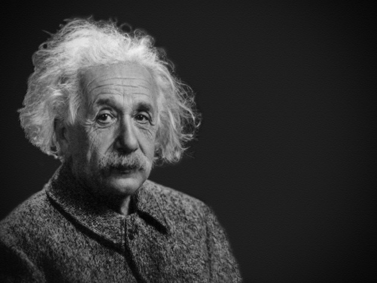

Albert Einstain
teoretical physicist

albert einstain is widely acknowledged to be one of the greatest physicists of all time. Einstein is best known for developing the theory of relativity, but he also made important contributions to the development of the theory of quantum mechanics.
This is biography of Albert Einstain:
- Albert Einstein was born in Ulm, in the Kingdom of Württemberg in the German Empire, on 14 March 1879 into a family of secular Ashkenazi Jews
- His parents were Hermann Einstein, a salesman and engineer, and Pauline Koch.
- Albert attended a Catholic elementary school in Munich, from the age of five, for three years. At the age of eight, he was transferred to the Luitpold Gymnasium (now known as the Albert Einstein Gymnasium), where he received advanced primary and secondary school education until he left the German Empire seven years later.
- In 1895, at the age of 16, Einstein took the entrance examinations for the Swiss Federal polytechnic school in Zürich (later the Eidgenössische Technische Hochschule, ETH).
- Early correspondence between Einstein and Marić was discovered and published in 1987 which revealed that the couple had a daughter named "Lieserl", born in early 1902 in Novi Sad where Marić was staying with her parents.
- After graduating in 1900, Einstein spent almost two frustrating years searching for a teaching post. He acquired Swiss citizenship in February 1901, but was not conscripted for medical reasons. With the help of Marcel Grossmann's father, he secured a job in Bern at the Swiss Patent Office, as an assistant examiner level III.
- On 30 April 1905, Einstein completed his dissertation, A New Determination of Molecular Dimensions with Alfred Kleiner, Professor of Experimental Physics at the University of Zürich, serving as pro-forma advisor. His work was accepted in July, and Einstein was awarded a Ph.D.
- By 1908, he was recognized as a leading scientist and was appointed lecturer at the University of Bern.
- In February 1933, while on a visit to the United States, Einstein knew he could not return to Germany with the rise to power of the Nazis under Germany's new chancellor, Adolf Hitler.
- he died on 18 April 1955 (aged 76) Princeton, New Jersey, U.S.
If you want to read more visit Wikipedia link